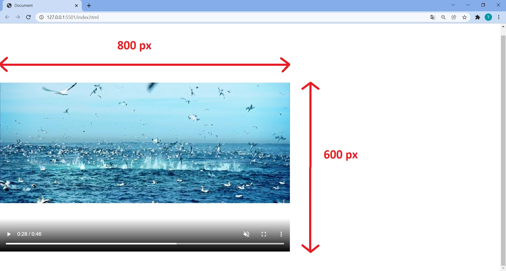

Video API
HTML5 video
The HTML5 specification introduced the <video> element for the purpose of playing videos.
HTML5 comes with elements for embedding rich media in documents — <video> and <audio> — which in turn come with their own APIs for controlling playback, seeking, etc. This presentstion shows you the basic foundations that can be achieved with HTML.
The <video> element
Attributes |
|
|---|---|
| src | The src (source) attribute contains a path to the video you want to embed. |
| controls | To control video playback. You must either use the controls attribute to include the browser's own control interface, or build your interface using the appropriate JavaScript API. |
| The paragraph inside the <video> |
Fallback content that will be displayed if the browser accessing the page doesn't support the <video> element |
Video example

Using multiple source formats to improve compatibility
Other <video> features
Other <video> features |
|
|---|---|
| width / height | To control the video size either with these attributes or with CSS. Videos maintain the aspect ratio. |
| autoplay | Makes the video start playing right away, while the rest of the page is loading. |
| loop | Makes the video start playing again whenever it finishes. |
| muted | Causes the media to play with the sound turned off by default. |
| poster | The URL of an image which will be displayed before the video is played. |
| preload | Used for buffering large files; it can take one of three values:
|
Extra video features example
Displaying video text tracks
The <track> element
HTML5 allows us to specify subtitles for a video using the <track> element.
WebVTT is a format for writing text files containing cues. The most common cues are:
| subtitles | Translations of foreign material, for people who don't understand the words spoken in the audio. |
| captions | Synchronized transcriptions of dialog or descriptions of significant sounds, to let people who can't hear the audio understand what is going on. |
| timed descriptions | Text which should be spoken by the media player in order to describe important visuals to blind or otherwise visually impaired users. |